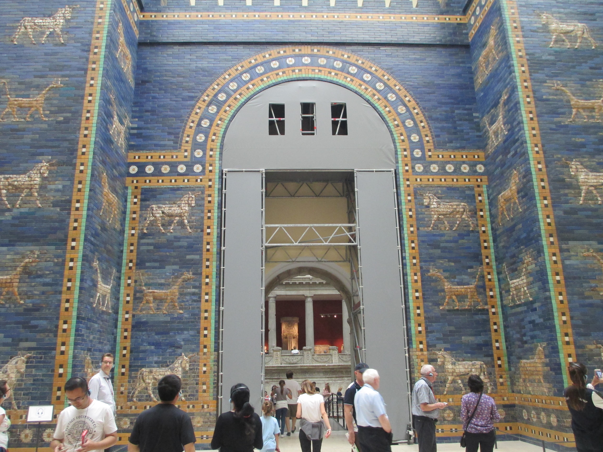

En 587 a.C., Babilonia destruyó Jerusalén, quemó el Templo y se llevó a su pueblo al destierro. Debería haber sido el fin de Israel. Fue, en cambio, el nacimiento de su fe madura.
Este es el episodio central de la serie, porque cuenta el acontecimiento más importante de toda la historia religiosa de Israel —más que el Éxodo, más que David—. El exilio babilónico fue la catástrofe total: la pérdida de la tierra, el rey, el Templo y la independencia, todo a la vez. Y sin embargo, de esa destrucción absoluta surgió algo nuevo. Aquí, la paradoja fundacional: el monoteísmo de Israel se forjó de verdad no en la victoria, sino en la derrota.

Babilonia heredó el poder de Asiria y, bajo Nabucodonosor II, se volvió la potencia dominante. Judá, el pequeño reino superviviente, cometió el error de rebelarse. La respuesta fue demoledora. En 587 a.C. (algunos dicen 586), tras un largo asedio, Babilonia tomó Jerusalén, la arrasó, quemó el Templo de Salomón y deportó a la élite de Judá —la familia real, los sacerdotes, los escribas, los artesanos— a Babilonia.
Para la mentalidad antigua, esto no era solo una derrota militar: era una derrota teológica. Si cada pueblo tenía su dios, y el tuyo permitía que quemaran su casa y te arrastraran al destierro, la conclusión obvia era que tu dios había perdido frente a los dioses de Babilonia. Ese era el momento en que un pueblo normalmente abandonaba a su divinidad derrotada y adoptaba la del vencedor.
Pero Israel —o mejor, sus pensadores en el exilio— hizo algo sin precedentes. En lugar de concluir "nuestro dios perdió", dieron un giro teológico genial: YHWH no fue derrotado; YHWH mismo usó a Babilonia para castigarnos por nuestros pecados. La derrota no probaba la debilidad de su Dios, sino su poder soberano sobre la historia entera, incluidos los imperios paganos.
Y de ahí siguió el paso decisivo. Si YHWH controlaba a Babilonia, a Asiria, a todas las naciones... entonces YHWH no era simplemente el dios de Israel, más fuerte que los otros. Era el único Dios real, y los dioses de las naciones eran nada —ídolos vacíos, madera y piedra—. Es en la literatura del exilio (sobre todo en el profeta que los estudiosos llaman Segundo Isaías) donde por primera vez se afirma con plena claridad un monoteísmo absoluto: no "no tendrás otros dioses ante mí", sino "no hay otros dioses en absoluto".
Cuando Babilonia destruyó todo, Israel pudo haber abandonado a su Dios por perdedor. En cambio, sus pensadores concluyeron lo contrario: si Dios permitió esto, es porque controla incluso a Babilonia; y si controla a todos, es el único Dios que existe. La catástrofe no mató su fe: la volvió monoteísmo pleno.
El exilio forzó otra transformación práctica y profunda. Sin Templo, sin sacrificios, sin tierra, ¿cómo se seguía siendo el pueblo de YHWH? La respuesta reinventó la religión: el peso se trasladó del lugar (el Templo) al texto y la práctica. Se volvieron centrales la observancia del sábado, la circuncisión, las leyes alimentarias y, sobre todo, el estudio de los textos sagrados —marcadores de identidad que podías llevar contigo a cualquier parte—.
Fue en el exilio, y por su causa, cuando se aceleró la labor de compilar y editar las escrituras —recogiendo las tradiciones del norte y del sur, la obra de Josías, las leyes y los profetas— para preservar una identidad que ya no tenía territorio. La Biblia, en buena medida, es hija del exilio: el libro que sustituyó al Templo caído. Aquí esta serie vuelve a tocar la conclusión de "los libros perdidos" y "la Biblia desenterrada".
Babilonia fue el punto de giro de todo el blog. El imperio que quiso borrar a Judá provocó, sin querer, la maduración de su religión: del monolatría (un dios entre otros) al monoteísmo pleno (un solo Dios), y de una fe atada a un Templo a una fe portátil, textual, capaz de sobrevivir en cualquier lugar. Todo lo que este blog ha contado —de El a YHWH, de muchos dioses a uno— tiene aquí su culminación histórica.
Cuando la propia Babilonia cayó, medio siglo después, ante un nuevo imperio, los exiliados pudieron volver a casa. Ese imperio liberador —Persia— traería la última gran influencia sobre la religión de Israel, y una que conecta directamente con el final de los tiempos. La última entrega.
La destrucción de Jerusalén y el Templo por Babilonia en 587/586 a.C., con deportaciones, es hecho histórico firme (fuentes babilónicas y bíblicas). El desarrollo de un monoteísmo explícito en la literatura del exilio, especialmente el Segundo Isaías (Isaías 40–55), es consenso académico en los estudios bíblicos.
La caracterización del exilio como motor de la compilación de las escrituras y del giro hacia una religión "portátil" (sábado, circuncisión, texto) es ampliamente aceptada, aunque el reparto exacto entre lo pre-exílico, exílico y postexílico se sigue debatiendo. La distinción monolatría→monoteísmo es un marco estándar en la disciplina.
Este artículo describe la transformación histórica de la religión de Israel con respeto por su significado espiritual.